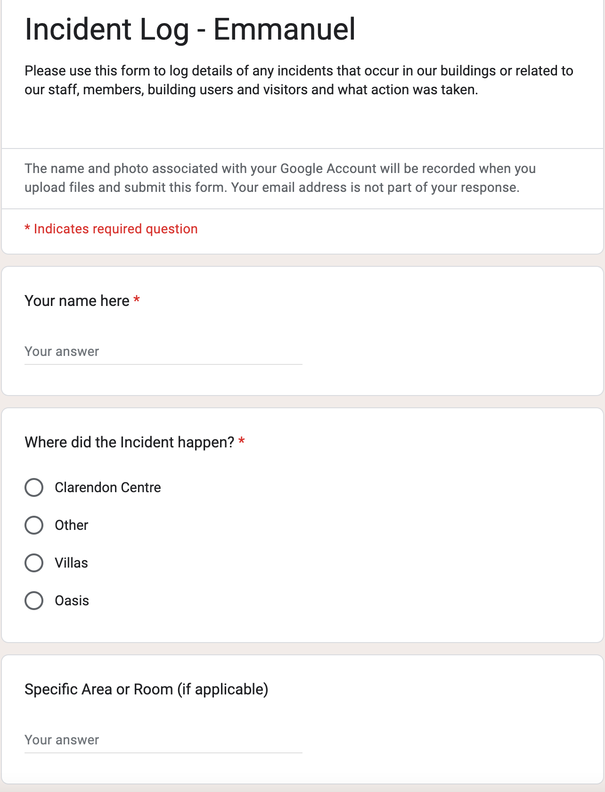
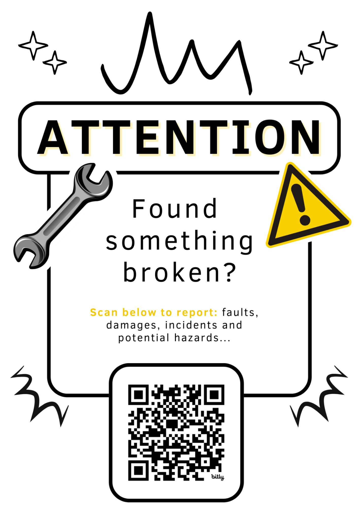
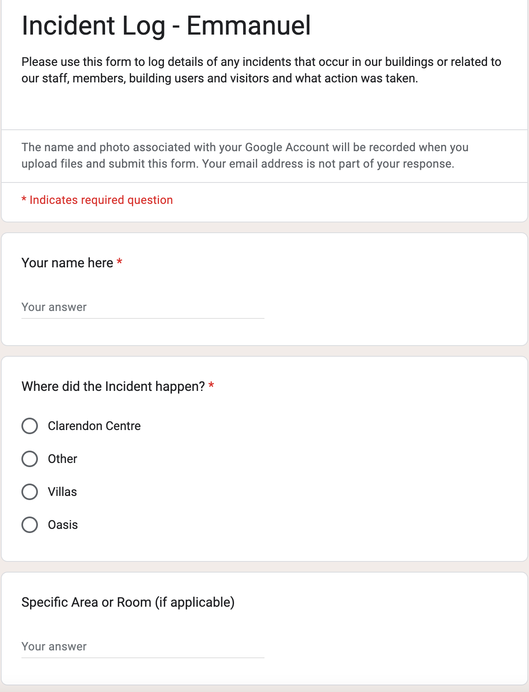
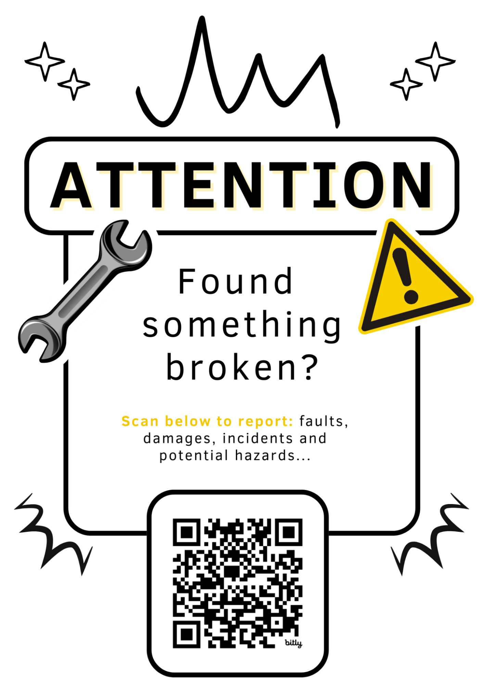

I Built an IT System
CV | zakariahreeves@gmail.com | +44 7410 702 046 | Brighton, UK
To address the challenges of reporting issues around the buildings, I designed a user-friendly front end that uses QR codes to allow users to raise building issues. Each room in the building has a poster featuring a QR code, making it easy for users to report concerns. When scanned, the QR code directs users to a Google Form, where they can fill out details about the issue they encountered. This straightforward process eliminates the need for cumbersome reporting via word of mouth where often much vital information is lost, encouraging everyone to communicate their concerns quickly and effectively. The form is designed to be intuitive, allowing users to provide essential information, such as the nature of the problem and its location, with minimal effort. The form also asks for a photo of any physical damage, this was a game changer for the team as it allowed us to diagnose problems remotely( as we own multiple buildings)
The back end of the ticket management system is powered by Google Sheets, where all submissions from the Google Form are automatically pulled. I created a simple and intuitive form layout as the form needed to be used by the entire team, and not everyone as techy as myself. “Tickets” are then assigned using the “Assigned to” column and a plan is made a put in the “progress column” This ensures no incident is lost in the system. The list is sorted prioritizing the latest no assigned Tickets, to promote action. Completed tickets are then ticked and instantly sorted to the bottom of the list.
Additionally, I created a data analysis framework within Google Sheets to examine trends over time. This helps highlight that the “Oasis” buildings had a higher percentage of security risk tickets and should have different budgets allocated to them.
A Slack bot further enhances the back end by posting a brief description of each ticket to the relevant channel as soon as it is submitted. This immediate notification ensures that the team is informed of urgent tickets and helps keep all team members informed of each building. Also allows discussions to take place on Slack, helping decide speed ticket assignments and action solutions much quicker.
The implementation of this ticket management system has significantly improved communication and efficiency within the Clarendon Trust. By providing a simple way for users to report issues, I have seen an increase in the number of concerns reported, allowing for more proactive management of the facilities. The data analysis capabilities have empowered higher management to identify patterns in the issues being reported, leading to informed decision-making regarding budgeting and resource allocation. For example, if a particular type of issue is reported frequently, management can prioritize addressing it, ultimately enhancing the overall workplace environment. The integration of the Slack bot ensures that the team remains aware of ongoing issues, fostering a culture of responsiveness and accountability. Overall, this system not only simplifies the reporting process but also cultivates a collaborative atmosphere where everyone feels empowered to contribute to maintaining the facilities.
Please note some information has been removed or altered to avoid sharing personal details.